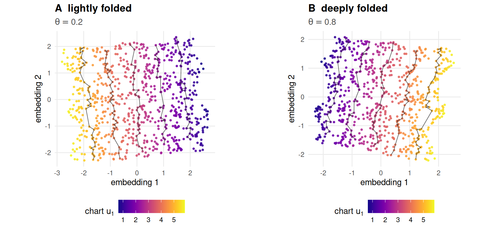

5 Geodesic methods
If the data lie on a folded sheet, how do you flatten it back out?
5.1 What this chapter answers
Isomap’s premise is this book’s premise. Estimate the distances measured along
the surface, embed those instead of the distances measured through the space
around it, and a sheet that has been bent without being stretched should come
back flat. R/methods.R records what every method consumes, and Isomap is the
only entry in the registry whose answer to that question is “geodesic distance”.
That makes this the one chapter where the method’s input and the answer key are
the same object. A rigid folding is an intrinsic isometry, so the geodesic
distance between two sampled points is the Euclidean distance between their
rows of truth. Not an estimate of it, and not a limit approached as the sample
grows: the exact number, in closed form, before any graph is built.
The consequence is that Isomap’s error decomposes into two terms that can be
measured apart rather than argued about. A graph term, from approximating
geodesics by shortest paths on a \(k\)-nearest-neighbour graph. An embedding
term, from putting the resulting distance matrix into two dimensions with
classical scaling. Hand cmdscale() the exact geodesics and the second term
vanishes to floating point. Everything that is left belongs to the first.
This chapter measures that first term across the fold sweep, predicts where it turns from a bias into a break, and reports what the break actually is on this object — which is not the mechanism the plan of record predicted.
Diffusion maps is here as the contrast. It sits in the same registry family and consumes ambient distance, and the gap between the two curves is the value of consuming the right thing.
5.2 Setup
grid <- read_run("data/processed/benchmark-grid.rds", "2483a468d82d4d64")
sweeps <- read_run("data/processed/part2-sweeps.rds", "16d43ff4992c0e58")
p <- miura_ori(nx = 6L, ny = 6L, alpha = pi / 3)
s <- sample_manifold(p, theta = 0.5, n = N_DEFAULT, seed = BENCH_SEEDS[1])The main grid fixes \(k\) at K_DEFAULT; part2-sweeps.rds is the artefact that
moves it, over 7 values at
3 fold angles and all 20 benchmark seeds.
Chapter 4 explains what read_run() refuses.
5.3 Background
5.3.1 Isomap, in three stages
Isomap (6) is classical multidimensional scaling
(22) with the distance matrix replaced. Build a
\(k\)-nearest-neighbour graph on the ambient points, weight each edge by its
ambient length, take all-pairs shortest paths, and hand the result to
cmdscale(). The first two stages estimate the geodesic metric; the third is the
same eigenproblem Chapter 4 already ran. Read as a kernel method
(12,25) it is classical scaling with a
geodesic kernel, which is exactly how Chapter 4 hands the reader over.
The estimate is justified asymptotically. Graph shortest paths converge to true
geodesics as the sample density rises, at a rate controlled by the sampling
radius and the surface’s curvature (26). Both stages of that
guarantee are worth naming here, because both fail on a crease pattern: the
convergence is stated for a manifold of positive reach, and a crease has reach
exactly zero (Chapter 2), and it is asymptotic in a
density this book fixes at N_DEFAULT points.
reg <- method_table()
fam <- reg[reg$family == "geodesic", c("method", "label", "consumes", "stochastic")]
knitr::kable(fam, row.names = FALSE,
col.names = c("registry name", "label", "consumes", "stochastic"),
caption = "The geodesic family of the embedding registry.")| registry name | label | consumes | stochastic |
|---|---|---|---|
| isomap | Isomap | geodesic | FALSE |
| diffusion | Diffusion map | ambient | TRUE |
Table 5.1 is the chapter in one row each. Isomap consumes geodesic distance and is deterministic. Diffusion maps consumes ambient distance and is stochastic, and both of those are easy to get wrong.
5.3.2 Diffusion maps, and why it is filed here
Diffusion maps (27) puts a Gaussian kernel on the ambient
distances, normalises it into a Markov chain, and embeds the points so that
Euclidean distance in the embedding approximates diffusion distance — the
difference between the transition distributions of a random walk started at each
point. Diffusion distance is a geodesic-flavoured quantity, which is why the
family label is what it is, but nothing in the construction estimates a geodesic.
The kernel sees ambient distance and only ambient distance, and the registry’s
consumes field says so. The same holds for Laplacian eigenmaps
(28), which Chapter 6 takes up.
Two implementation facts travel with it. It is stochastic —
diffusionMap::diffuse() uses a randomised eigensolver — so embed() refuses to
run it without a seed. And its bandwidth is set from the \(k\)-th
nearest-neighbour distance rather than the median pairwise distance, because the
outlier noise model inflates the second and not the first; R/methods.R records
what that cost when it was done the obvious way.
Two changes from the plan of record. The outline for
this chapter named igraph::distances() for the shortest
paths and locally linear embedding as a third method. Neither survived.
igraph is not installable in this project — a missing
system library — so R/metrics.R computes all-pairs shortest
paths by min-plus relaxation with a work list, which is Bellman–Ford
rather than Dijkstra (29)
and was timed against two alternatives at the book’s sample size before
it was kept. LLE consumes neighbourhood structure, not geodesics, and is
in the neighbor embeddings chapter with the
other methods that do.
5.4 The geodesic you do not have to estimate
5.4.1 The claim, and its one condition
Folding preserves distance along the surface exactly (Chapter
2). So the length of a path on the folded sheet equals the
length of its preimage in the flat chart, and the shortest path in the chart
between two points is the straight segment between them. Therefore
dist(s$truth) is the geodesic distance matrix — not a discretisation of it.
The condition is that the straight segment stays on the paper. A Miura’s
unfolded outline is not convex, so this is a real condition and not a
formality; sample_manifold()’s default boundary = FALSE trims the sample to a
convex sub-rectangle, and the trimming is what makes the equality hold rather
than a bound.
dU <- reference_dist(s, "chart")
dA <- reference_dist(s, "ambient")
same <- outer(s$facet, s$facet, "==")
up <- upper.tri(dU)
within <- max(abs(dA - dU)[same & up]) # isometry, inside a facet
across <- max((dA - dU)[!same & up]) # contraction, across a crease
exit <- chart_exit_fraction(s, p) # segments that leave the sheetThree checks, and each one is a different half of the claim. Inside a facet
ambient and chart distance agree to 1.1e-15, which is rounding on a
closed form. Across a crease the ambient distance is strictly smaller — the
largest signed difference over all 308,887
such pairs is -6.2e-07, a negative number. And
chart_exit_fraction() reports that 0 of sampled segments leave the
sheet, so the chart distance is the geodesic for every pair in this sample and
not merely a lower bound on it.
5.4.2 The decomposition
Y_exact <- cmdscale(as.dist(dU), k = EMBED_DIM) # exact geodesics in
dG <- reference_dist(s, "graph", k = K_DEFAULT) # what Isomap estimates
Y_iso <- embed("isomap", s, k = K_DEFAULT)
err_embed <- reconstruction_error(Y_exact, s$truth)
err_total <- reconstruction_error(Y_iso, s$truth)
agree <- max(abs(unname(Y_iso) - unname(cmdscale(as.dist(dG), k = EMBED_DIM))))
graph_dev <- sqrt(mean(((dG - dU)[up])^2)) / sqrt(mean((dU[up])^2))Feed classical scaling the exact geodesic distances and it returns the chart, at a Procrustes error of 6.9e-16. That is the embedding term, and it is zero: the chart is a two-dimensional Euclidean configuration, so double-centring its squared distances and taking two eigenvectors inverts the construction exactly.
Isomap on the same sample scores 0.0266. It differs from
cmdscale() on the graph distances by 8.8e-15,
because it is cmdscale() on the graph distances. So the whole of that
0.0266 is the graph term, and the graph term is small in the
distances themselves — the shortest-path matrix departs from the exact geodesics
by 2.95 per cent in relative root-mean-square.
This is the sense in which the chapter’s title is not a metaphor. Isomap’s error on a crease pattern has one cause, it is a property of a graph rather than of an optimiser, and it can be looked at directly.
![Two scatter panels side by side, each with exact geodesic distance on the horizontal axis and the ratio of graph distance to geodesic distance on the vertical, with a reference line at one. In the left panel, at a small fold angle, the cloud spreads widely above the line at the shortest distances, reaching roughly twice the geodesic, then narrows quickly into a tight band sitting just above one for the rest of the range. In the right panel, at a large fold angle, the same narrowing happens but the band has dropped below the line: the short-distance scatter now runs from about a half to about twice, and beyond a moderate distance the band settles a little under one.](05-geodesic-methods_files/figure-html/geo-graph-fig-1.png)
Figure 5.1: Shortest-path distance on the ambient neighbourhood graph against the exact geodesic distance, as a ratio, for a lightly folded sheet and a deeply folded one. The horizontal line at one is exactness. Points above it are the discretisation bias of walking along graph edges; points below it are distances the fold has contracted. A random ten thousand pairs are drawn in each panel.
Figure 5.1 is the graph term seen twice. At a small fold
angle it is a positive bias: a path made of graph edges zigzags where a
geodesic runs straight, so shortest paths come out too long, and the scatter
collapses onto a tight band just above one as the pair gets further apart and the
zigzag averages out. At a large fold angle that band has dropped below the line. Edges that cross a crease are shortened by
the \(\sin(\rho/2)\) factor Chapter 2 derives, shortest paths
route through as many creases as they can, and the estimate falls below the
truth. The two biases are different mechanisms with opposite signs, and
geo-diagnostics is where they cancel.
5.5 Results
clean <- subset(grid, noise == "none" & ran)
cur <- aggregate(cbind(rmse, qnx) ~ method + theta, clean, mean)
band <- aggregate(rmse ~ method + theta, clean,
function(x) c(lo = min(x), hi = max(x)))
band <- data.frame(band[, c("method", "theta")], band$rmse)
cur <- merge(cur, band, by = c("method", "theta"))
cur <- subset(cur, method %in% c("isomap", "diffusion", "pca"))
at <- function(m, t, col = "rmse") cur[[col]][cur$method == m & cur$theta == t]
wide <- reshape(cur[, c("theta", "method", "rmse", "qnx")],
idvar = "theta", timevar = "method", direction = "wide")
wide <- wide[order(wide$theta), ]
cross_rmse <- wide$theta[which(wide$rmse.isomap < wide$rmse.pca)[1]]
cross_qnx <- wide$theta[which(wide$qnx.isomap > wide$qnx.pca)[1]]
noisy <- aggregate(rmse ~ noise + theta, subset(grid, method == "isomap" & ran),
mean)![Two panels sharing a horizontal axis, the folding parameter from zero to nearly one. Panel A, reconstruction error: the PCA curve starts at zero and rises smoothly to about 0.21; the Isomap curve starts at about 0.024, stays nearly flat through the first half and then rises to about 0.19, crossing below the PCA curve at around 0.4; the diffusion curve is nearly flat at about 0.2 across the whole range and rises at the very end. Panel B, Q-NX: PCA starts at one and falls to about 0.68; Isomap starts at about 0.94, falls slowly and crosses above PCA near 0.6; diffusion runs flat near 0.785 and falls at the end.](05-geodesic-methods_files/figure-html/geo-curves-fig-1.png)
Figure 5.2: Isomap and diffusion maps over the fold sweep, with PCA from Chapter 4 as the reference. Panel A is reconstruction error against the chart, panel B is \(Q_{NX}\) at \(K_{QNX}\) against the chart. Lines are means over the twenty benchmark seeds and bands in panel A are their full range. Lower is better in A, higher in B.
Three readings of Figure 5.2, in order of how much they cost the reader to accept.
Isomap wins, eventually, and pays an entry fee for it. On the flat sheet its error is 0.024 where PCA’s is zero: the graph term is there at \(\theta = 0\), because a neighbourhood graph is a discretisation whether or not anything has been folded. Isomap does not overtake PCA on reconstruction error until \(\theta = 0.4\), and on \(Q_{NX}\) not until \(\theta = 0.6\). From 0.4 to the end of the sweep it is the best method in the book on this grid, and at the last fold angle it scores 0.188 against PCA’s 0.212.
That the two metrics put the crossing in different places is not a discrepancy to be resolved. Reconstruction error reads distances and \(Q_{NX}\) reads rank order, and Chapter 9 is where the disagreement is the subject rather than a nuisance.
The curve has a shape, and the shape is the point. Isomap’s error is essentially flat through the first half of the sweep — it grows by a factor of 1.19 between the flat sheet and the middle — and then rises by a factor of 6.58 over the second half. A benchmark reporting one fold angle would have called this method robust or fragile depending entirely on which angle it chose.
Diffusion maps does not improve on PCA anywhere. Its error is close to flat across the whole sweep, from 0.201 to 0.329, and it is the worst of the three at 20 of the 20 fold angles in the sweep. A method that consumes ambient distance and embeds a random walk on it has no mechanism for undoing a fold; it is in this chapter to show that the family label is not what does the work.
Noise moves Isomap’s curve without changing it. At \(\theta = 0\) the error is already 0.124 under ambient Gaussian noise and 0.416 under outliers, on a sheet that is not folded at all. Displaced points are new neighbours, and a graph method’s whole input is who is a neighbour.
5.6 When does the graph bridge?
A fold jump is a \(k\)-nearest-neighbour edge between two points the sheet holds far apart — the classical short circuit that destroys Isomap on tightly wound surfaces (9). It is the failure this chapter was specified to predict, and the prediction can be made without running anything.
Two quantities cross. facet_gap(p, theta) is the exact minimum ambient distance
between two facets that share no vertex: a property of the surface alone, no
sample and no density (Chapter 2 uses it to check that the
sheet never passes through itself). Against it stands the \(k\)-nearest-neighbour
radius \(r_k\) in the chart. That radius is a constant of the sweep, not a function
of \(\theta\): sample_manifold() draws the chart points first and folds them
after, so for a fixed seed s$truth is the same matrix at every fold angle.
The graph acquires its first fold jump when the surface’s own clearance falls
below the radius at which the sample connects points.
KS <- c(10L, 20L, 30L, 45L)
s0 <- sample_manifold(p, theta = 0, n = N_DEFAULT, seed = BENCH_SEEDS[1])
dU0 <- as.matrix(dist(s0$truth))
Lfar <- 0.25 * max(dU0) # branch_gap()'s "far apart"
d0 <- dU0; diag(d0) <- Inf
r_k <- vapply(KS, function(k)
median(apply(d0, 1L, function(r) sort.int(r, partial = k)[k])), numeric(1))
th_fine <- seq(0.70, 0.99, by = 0.01) # deliberately past THETA_GRID
gap <- vapply(th_fine, function(t) facet_gap(p, t)$gap, numeric(1))
gapfun <- stats::approxfun(th_fine, gap)
predicted <- vapply(r_k, function(r) tryCatch(
stats::uniroot(function(t) gapfun(t) - r, range(th_fine))$root,
error = function(e) NA_real_), numeric(1))
jumps <- function(theta, seed) {
st <- sample_manifold(p, theta = theta, n = N_DEFAULT, seed = seed)
nn <- FNN::get.knn(st$X, k = max(KS))$nn.index
du <- as.matrix(dist(st$truth))
vapply(KS, function(k) sum(du[cbind(rep(seq_len(nrow(nn)), times = k),
as.vector(nn[, seq_len(k)]))] > Lfar),
numeric(1))
}
counts <- t(vapply(th_fine, function(t)
rowMeans(vapply(BENCH_SEEDS, function(sd) jumps(t, sd), numeric(length(KS)))),
numeric(length(KS))))
control <- rowMeans(vapply(BENCH_SEEDS, function(sd) jumps(0, sd),
numeric(length(KS))))
measured <- vapply(seq_along(KS), function(a) {
i <- which(counts[, a] >= 1)[1]
if (is.na(i)) NA_real_
else if (i == 1L) th_fine[1]
else stats::approx(counts[(i - 1):i, a], th_fine[(i - 1):i], xout = 1)$y
}, numeric(1))
onset <- data.frame(k = KS, r_k = r_k, predicted = predicted,
measured = measured, at_flat = control)An edge counts as a fold jump when its endpoints are more than Lfar apart in
the chart, which is branch_gap()’s own definition of “far apart along the
surface” reused so that the chapter and the difficulty statistic mean the same
thing. The onset is where the expected number of such edges reaches one,
because the first jump is a tail event and one edge in one seed is not an onset.
The fold sweep here runs past max(THETA_GRID), deliberately and uniquely in
this book. Whether the short circuit arrives before or after the benchmark’s own
ceiling is exactly the question, so the measurement may not be confined to the
answer.
The criterion calibrates itself. At \(\theta = 0\) the sheet is flat, ambient and chart distance coincide, and any edge counted there is sparse sampling rather than folding. That control is 0 at every \(k\) tested, so the counts below have no false positives in them.
![Two panels sharing a horizontal axis that runs from fold angle 0.7 to 0.99, with a vertical dashed line at 0.95 marking the benchmark grid's ceiling. Panel A: a falling curve, the facet clearance, from about 0.74 down to about 0.19, crossed by four horizontal dashed lines at heights 0.29, 0.41, 0.51 and 0.63 for neighbourhood sizes 10, 20, 30 and 45. The three upper lines cross the curve before the vertical marker; the lowest, for the smallest neighbourhood, crosses it after. Panel B: four rising curves of fold-jump edge counts on a logarithmic vertical axis, one per neighbourhood size, each leaving zero close to where panel A predicts and then climbing steeply; the curve for the smallest neighbourhood is flat at zero until past the vertical marker.](05-geodesic-methods_files/figure-html/geo-onset-fig-1.png)
Figure 5.3: The analytic onset against the measured one, over a fold sweep deliberately extended past the benchmark’s own ceiling — the vertical dashed line at the largest fold angle the grid uses. Panel A is the exact clearance between non-touching facets as the sheet closes, with the chart \(k\)-nearest-neighbour radius for four neighbourhood sizes drawn as horizontal lines; each crossing is a predicted onset, marked with an open circle. Panel B is the measured number of fold-jump edges per sample, averaged over the twenty benchmark seeds, with the same predictions marked on the horizontal axis.
| k | chart radius | predicted onset | measured onset | edges at flat |
|---|---|---|---|---|
| 10 | 0.292 | 0.974 | 0.971 | 0 |
| 20 | 0.413 | 0.945 | 0.944 | 0 |
| 30 | 0.507 | 0.909 | 0.914 | 0 |
| 45 | 0.629 | 0.832 | 0.855 | 0 |
Table 5.2 is the chapter’s headline promise, kept. The
analytic onset and the measured one agree to
0.023 in \(\theta\) at worst —
under half a step of the benchmark’s own grid — over four neighbourhood sizes
spanning a factor of 4.5. The residual has the sign it should:
facet_gap() is a minimum over the whole of two facets, and a finite sample does
not put points exactly at the closest-approach spot, so the measurement is late.
The row that matters is the first one, and it is a finding about the benchmark rather than about Isomap.
The committed grid never enters the short-circuit
regime. At \(k =\)
K_DEFAULT — the neighbourhood size every cell of
benchmark-grid.rds runs at — the predicted onset lies past
max(THETA_GRID), and the measured count inside the sweep
never leaves zero. The classical failure that geodesic methods are known
for is not what this benchmark, as committed, measures.
The count inside the committed sweep is
0 at every fold angle
in it, over all 20 seeds. The two boundaries are independent, which is
what makes that worth saying rather than assuming. THETA_GRID stops where it does because at \(\theta = 1\) the sheet
has no extent in one direction and every method would be embedding a collapsed
object — a reason with nothing to do with neighbourhood graphs (R/constants.R
states it). The short circuit at \(k =\) K_DEFAULT arrives at
0.974 predicted and
0.971 measured, which is
0.021 past that ceiling. Nothing was
arranged; the grid simply stops just short.
So everything in Figure 5.2 — the whole of Isomap’s degradation from 0.024 to 0.188 across the sweep — happened without a single fold jump. Raising \(k\) is what crosses the boundary inside the grid, and that is the subject of the next section.
5.7 Diagnostics
If the short circuit is absent, what is doing the damage? The \(k\) sweep answers it, and the answer is that a neighbourhood size is not a setting to be tuned once.
sw <- aggregate(cbind(rmse, qnx) ~ method + k_tck + theta,
subset(sweeps, ran), mean)
best <- do.call(rbind, lapply(split(subset(sw, method == "isomap"),
subset(sw, method == "isomap")$theta),
function(d) d[which.min(d$rmse), ]))
dif <- subset(sw, method == "diffusion")
iso <- subset(sw, method == "isomap")
ths <- sort(unique(sweeps$theta))
kmax <- max(sweeps$k_tck)
kbest <- function(t) best$k_tck[best$theta == t]
err <- function(t, k) iso$rmse[iso$theta == t & iso$k_tck == k]
carry <- function(from, to) err(to, kbest(from)) / err(to, kbest(to))The neighbourhood size that minimises Isomap’s reconstruction error falls as the sheet closes: 45 at \(\theta = 0.2\), 20 at 0.5, and 12 at 0.8. Neither end’s choice survives the other. Carrying the shallow optimum to the deepest fold multiplies the error by 1.51; carrying the deep optimum back to the shallowest multiplies it by 3.81. There is no one \(k\) for this pattern, and the relative cost of the wrong one is larger at the shallow end — where the absolute error is smaller by an order of magnitude, so the two ends are not simply harder and easier versions of one problem.
KB <- c(5L, 10L, 20L, 45L)
bias <- do.call(rbind, lapply(ths, function(t) {
st <- sample_manifold(p, theta = t, n = N_DEFAULT, seed = BENCH_SEEDS[1])
du <- reference_dist(st, "chart"); u <- upper.tri(du)
do.call(rbind, lapply(KB, function(k)
data.frame(theta = t, k = k,
bias = median(((reference_dist(st, "graph", k = k) - du) / du)[u]))))
}))
zero <- vapply(split(bias, bias$theta), function(d)
tryCatch(exp(stats::approx(d$bias, log(d$k), xout = 0)$y), error = function(e) NA_real_),
numeric(1))![Two panels, both with neighbourhood size on a logarithmic horizontal axis from five to seventy. Panel A: three U-shaped curves of reconstruction error. The lowest, at the smallest fold angle, falls steeply and bottoms out near k = 45. The middle bottoms out near k = 20 and rises again. The highest, at the largest fold angle, bottoms out near k = 12 and rises steeply after it. Panel B: three curves falling from positive values at k = 5 through a horizontal zero line to negative values at k = 45; the curve for the largest fold angle crosses zero first, near k = 7, and ends lowest, near minus 0.2.](05-geodesic-methods_files/figure-html/geo-k-fig-1.png)
Figure 5.4: Why the optimum moves. Panel A is Isomap’s reconstruction error against neighbourhood size at three fold angles, from the committed sweep; the open circles mark each curve’s minimum. Panel B is the median relative departure of the shortest-path distance from the exact geodesic, measured at the same three fold angles: positive is the discretisation bias of walking along edges, negative is the fold contracting them, and each curve crosses zero at a smaller neighbourhood size than the last.
Figure 5.4 puts the mechanism next to its consequence. Panel B is the two biases of Figure 5.1 as functions of \(k\). Raising \(k\) shortens the zigzag and kills the positive bias; it also lengthens every edge, and a longer edge crosses more creases and is contracted by more of them. The crossing point — where the median shortest path is neither long nor short — falls from \(k \approx 35\) at \(\theta = 0.2\) to \(14\) at 0.5 and \(6.8\) at 0.8, in the same order and over nearly the same range as the error minima in panel A. The two do not coincide, and should not: panel A minimises a Procrustes fit that pays for variance as well as bias.
Diffusion maps has no such trade-off. Its error falls monotonically in \(k\) at all three fold angles, from 0.208 at \(k = 5\) to 0.132 at \(k = 70\) in the middle of the sweep, because \(k\) there sets a kernel bandwidth and not a graph. It never approaches Isomap’s optimum, and its best setting is the largest one offered — a curve still falling at the edge of the sweep is a sweep that stopped too early, and this one is reported as such.
Two housekeeping facts from the artefacts, both of which would have been
warnings scrolling past in a long run. Isomap’s k_effective column equals the
requested \(k\) in every one of the 1200 main-grid rows
and every sweep row, so the neighbourhood graph never disconnected and never
needed repairing. Diffusion maps needed a widened kernel in
399 of
1200 cells and declined outright in
1; those are recorded in the
tuning and status columns rather than folded into the mean.
5.8 Where it fails
The predicted failure is not the observed one. This chapter was specified to pair an analytic short-circuit onset with a measured one, and it does — to 0.023 in \(\theta\). What the specification also assumed, and what is false, is that the short circuit is what breaks Isomap on this object. At the grid’s neighbourhood size it never occurs inside the sweep, and Isomap’s error still rises by a factor of 7.82 across it. The mechanism that actually operates is edge contraction: present at every \(\theta > 0\), graded rather than catastrophic, and invisible to any diagnostic built to look for a bridge. A reader who arrives expecting Isomap to collapse here will not see it collapse — it is the best method on this grid above \(\theta = 0.4\) — and the reason is that the benchmark’s difficulty axis stops short of the regime that would do it.
When the bridge does form, it is not graceful. Shortest path takes a minimum over routes, so a single bad edge is not averaged against the good ones — it is preferred by every pair whose route it shortens.
z <- pair[[2]] # the deeply folded sample
dAf <- as.matrix(dist(z$s$X))
adj <- .knn_graph(dAf, K_DEFAULT) # reference_dist()'s internals,
G0 <- .apsp_minplus(adj, dAf) # reached directly so that the
far <- as.matrix(dist(z$s$truth)) > Lfar # graph can be edited between
worst <- dAf; worst[!far] <- Inf
ij <- arrayInd(which.min(worst), dim(worst))
edges <- sum(adj) / 2
adj[ij[1], ij[2]] <- adj[ij[2], ij[1]] <- TRUE
G1 <- .apsp_minplus(adj, dAf)
u2 <- upper.tri(G0)
touched <- mean((G1 < G0 - TOL$default)[u2])
worst_p <- max(((G0 - G1) / G0)[u2])
before <- reconstruction_error(cmdscale(as.dist(G0), k = EMBED_DIM), z$s$truth)
after <- reconstruction_error(cmdscale(as.dist(G1), k = EMBED_DIM), z$s$truth)One edge is added to a graph that already has 4,692
of them — the single closest ambient approach between two points the chart holds
far apart, which is exactly the pair branch_gap() reports. It shortens the
shortest path for
5.15 per cent of all pairs, by up to
38.9 per cent, and raises the reconstruction error from
0.0621 to 0.0767. Nothing about the sample changed;
one entry of an adjacency matrix did.

Figure 5.5: What Isomap returns, coloured by the exact chart coordinate along the corrugation, with grey level sets of that coordinate drawn over the points. Panel A is the lightly folded sheet and panel B the deeply folded one. Both recover the chart; the damage in B is a crowding of the level sets, not a tear.
Figure 5.5 is what those errors look like. Neither panel is a failure a reader would spot by eye, which is the argument for having an answer key: the deeply folded embedding is 2.6 times worse than the lightly folded one and looks like a slightly wobblier version of it.
The estimate has no guarantee here. The convergence of graph distances to
geodesics is stated for a manifold of positive reach and a density that grows
(16,26). A crease has reach zero and this book
fixes \(n\) at N_DEFAULT. What replaces the guarantee is the measurement above,
and that is a weaker thing than a theorem.
One family, one size, one density. Every onset in Table
5.2 is a statement about a six-by-six Miura at
N_DEFAULT points. The radius \(r_k\) falls as \(\sqrt{k/n}\), so the same
prediction at four times the sample size moves every onset later, and the sweep
that would establish that has not been run.
5.9 Reproduce this
Both artefacts are committed and neither is generated at render time.
scripts/run-benchmark-grid.R produces benchmark-grid.rds and
scripts/run-part2-sweeps.R produces part2-sweeps.rds; each declares its
artefact path in its header, and scripts/check-artefact-producers.R checks that
every artefact the book specifies has one. The digests in geo-setup are what
stop these sentences from being read against a different run.
The claims the chapter rests on are assertions in the test suite:
-
tests/testthat/test-folding.R— facet isometry across the sweep, andfacet_gap()against a brute-force point sample. -
tests/testthat/test-metrics.R—reference_dist()’s three geometries, the neighbourhood graph’s connectivity repair, and the shortest paths against a reference implementation. -
tests/testthat/test-methods.R— the registry contract, including that a stochastic method called without a seed is an error.
Run them with Rscript tests/testthat.R from the repository root.
5.10 Further reading
Tenenbaum, de Silva and Langford (6) is Isomap’s source and still the clearest statement of the three-stage construction. The convergence of graph distances to geodesics is Bernstein and co-authors (26); read it together with Balasubramanian and Schwartz’s comment (9), which is where the topological instability this chapter measures was first named, and with Niyogi, Smale and Weinberger (16) for what a sampling guarantee needs in order to exist.
Coifman and Lafon (27) introduce diffusion maps and the
diffusion distance the embedding approximates; Belkin and Niyogi
(28) is the closely related Laplacian construction Chapter
6 takes up. Lee and Verleysen (12) set out the whole
family as one kernel eigenproblem, which is the framing that makes classical
scaling (22), kernel PCA (25) and Isomap
three settings of one method rather than three methods. Dijkstra
(29) is where shortest paths on a weighted graph begin, though
R/metrics.R does not use his algorithm and says why.